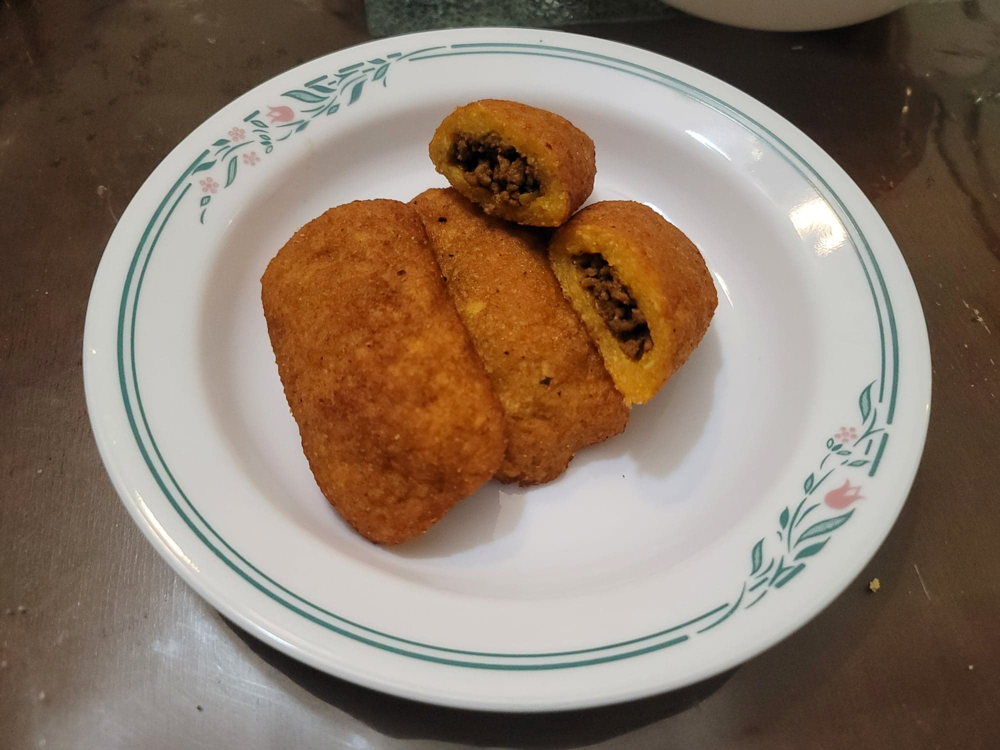

Alcapurrias

Ingredients:
Picadillo:
- 1 lb Ground beef, 90%
- 1 tbsp Olive oil
- 1/4 cup Recaito
- 1/2 cup Tomato sauce
- 1/2 cup Pimento olives, halved and sliced
- 2 tsp Sazón seasoning
- 2 tsp Adobo seasoning
- 2 tsp Dried oregano
- 2 tsp Cumin
- Salt, to taste
- Black pepper, to taste
Masa:
- 4 Green plantains, peeled and chopped roughly
- 2 lb Cassava, peeled and chopped roughly (about 2 cassava roots)
- 1 tsp Sazón seasoning
- 1 tsp Salt, or to taste
Other Ingredients:
Instructions:
- Prepare the picadillo. Heat the olive oil over medium heat in a large pan. Add in the sofrito and sauté for about 1 minute. Then add in the beef and sauté until the beef is fully cooked. Add in the tomato sauce and cook for 10 minutes, stirring occasionally. Then stir in the olives and all of the seasonings. Taste and add salt and pepper if needed. Remove from heat.
- For the masa, place the plantains and cassava through a food processor with a grater attachment. Then place them back into a food processor with blades along with the sazón and salt. Pulse until it becomes a fine paste.
- Cut out 5x5 inch squares of parchment paper and spray lightly with oil. Scoop 1/4 cup of masa and flatten it onto a square of parchment paper. Then scoop 1 tbsp of picadillo and place it over the masa. Use the parchment paper to wrap the masa over the picadillo and form it into a log shape. Repeat with the rest of the masa and picadillo.
- Heat the oil in a tall pot. Bring to 350 degrees Fahrenheit. Place a few of the alcapurrias into the oil, being careful not to let them stick to each other in the oil. Let them fry for about 5 minutes or until golden. Then transfer to a paper towel lined plate before transferring to a serving bowl. Repeat for the rest of the alcapurrias.
- Serve immediately while still hot.